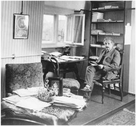

In his Berlin home study 在柏林家中书房
Cosmology is the study of the universe as a whole, including its size and shape, its history and destiny, from one end to the other, from the beginning to the end of time. That’s a big topic. And it’s not a simple one. It’s not even simple to define what those concepts mean, or even if they have meaning. With the gravitational field equations in his general theory of relativity, Einstein laid the foundations for studying the nature of the universe, thereby becoming the primary founder of modern cosmology.
宇宙学是对宇宙整体的研究，包括宇宙的大小和形状，历史和归宿。无论是空间的范围还是时间的界限，都是一个相当大的话题，研究起来并不容易。即使是定义那些概念意味着什么或者它们是否有意义也绝非易事。根据广义相对论的引力场方程，爱因斯坦为研究宇宙的本性奠定了基础，并因而成为现代宇宙学的首要奠基人。
Helping him in this endeavor, at least in the early stages, was a profound mathematician and even more distinguished astrophysicist, Karl Schwarzschild, who directed the Potsdam Observatory. He read Einstein’s new formulation of general relativity and, at the beginning of 1916, set about trying to apply it to objects in space.
在这方面，至少在其初始阶段，一位具有深邃洞察力的数学家，同时也是著名的天体物理学家帮助了爱因斯坦。他叫卡尔·施瓦茨希尔德，是波茨坦天文台台长。他读到了爱因斯坦新提出的广义相对论。1916年年初，他尝试将广义相对论用于空间物体。
One thing made Schwarzschild’s work very difficult. He had volunteered for the German military during the war, and when he read Einstein’s papers he was stationed in Russia, projecting the trajectory of artillery shells. Nevertheless, he was also able to find time to calculate what the gravitational field would be, according to Einstein’s theory, around an object in space. It was the wartime counterpart to Einstein’s ability to come up with the special theory of relativity while examining patent applications for the synchronization of clocks.
有一件事令施瓦茨希尔德的工作举步维艰。战争期间，他志愿加入了德军。他是在俄国研究弹道轨迹时读到爱因斯坦论文的。他根据爱因斯坦的理论抽空计算了空间物体周围的引力场，就像爱因斯坦在思考时钟同步的潜在应用时提出狭义相对论一样。
In January 1916, Schwarzschild mailed his result to Einstein with the declaration that it permitted his theory “to shine with increased purity.” Among other things, it reconfirmed, with greater rigor, the success of Einstein’s equations in explaining Mercury’s orbit. Einstein was thrilled. “I would not have expected that the exact solution to the problem could be formulated so simply,” he replied. The following Thursday, he personally delivered the paper at the Prussian Academy’s weekly meeting.1
1916年1月，施瓦茨希尔德将其结果寄给了爱因斯坦，说这使他的理论“闪耀着愈发纯净的光芒”。至少它以更高的严格性再次证明了爱因斯坦方程能够成功地解释水星轨道。爱因斯坦激动不已。“我没有料到问题的精确解竟然可以表述得如此简洁。”他回信说。接下来的那个星期四，他亲自到普鲁士科学院的每周会议上通告了这篇论文。
Schwarzschild’s first calculations focused on the curvature of space-time outside a spherical, nonspinning star. A few weeks later, he sent Einstein another paper on what it would be like inside such a star.
施瓦茨希尔德先是计算了一个非旋转的球形恒星外部的时空曲率。几周以后，他又寄给爱因斯坦一篇论文，讨论了这样一颗恒星内部的时空曲率是什么样子。
In both cases, something unusual seemed possible, indeed inevitable. If all the mass of a star (or any object) was compressed into a tiny enough space—defined by what became known as the Schwarzschild radius—then all of the calculations seemed to break down. At the center, spacetime would infinitely curve in on itself. For our sun, that would happen if all of its mass were compressed into a radius of less than two miles. For the earth, it would happen if all the mass were compressed into a radius of about one-third of an inch.
无论是哪种情况，似乎都可能有某种不同寻常的事情发生，事实上是必然会发生。如果一颗恒星（或任何物体）的所有质量都被压缩到一个足够小的空间（即后来所谓的施瓦茨希尔德半径）中，那么所有计算似乎都失效了。时空将无限地自行弯曲下去。对我们的太阳而言，如果它的所有质量都被压缩到不足两英里的半径内，这种情况就会发生。而地球则需要压缩到大约1/3英寸。
What would that mean? In such a situation, nothing within the Schwarzschild radius would be able to escape the gravitational pull, not even light or any other form of radiation. Time would also be part of the warpage as well, dilated to zero. In other words, a traveler nearing the Schwarzschild radius would appear, to someone on the outside, to freeze to a halt.
这就意味着，在这种情况下，施瓦茨希尔德半径之内没有任何东西能够逃脱引力的牵引，甚至连光或其他形式的辐射也不行。时间也将延缓到停滞。换句话说，在外面的观察者看来，施瓦茨希尔德半径附近的旅行者似乎被冻结了，从而驻足不前。
Einstein did not believe, then or later, that these results actually corresponded to anything real. In 1939, for example, he produced a paper that provided, he said, “a clear understanding as to why these ‘Schwarzschild singularities’ do not exist in physical reality.” A few months later, however, J. Robert Oppenheimer and his student Hart-land Snyder argued the opposite, predicting that stars could undergo a gravitational collapse.2
无论是当时还是以后，爱因斯坦都不相信这些结果能够有实际对应。例如，他1939年写了一篇论文，“对这些‘施瓦茨希尔德奇点’为什么不存在于物理实在之中进行了清晰说明”。然而数月之后，J.罗伯特·奥本海默和他的学生哈特兰·斯奈德就提出了相反的看法，预言恒星可能会遭遇引力塌缩。
As for Schwarzschild, he never had the chance to study the issue further. Weeks after writing his papers, he contracted a horrible auto-immune disease while on the front, which ate away at his skin cells, and he died that May at age 42.
至于施瓦茨希尔德，则再也没有机会进一步研究这个问题了。完成这些论文数周之后，他在前线染上了一种可怕的自身免疫性疾病，皮肤细胞遭到严重损害。当年5月施瓦茨希尔德去世，年仅42岁。
As scientists would discover after Einstein’s death, Schwarzschild’s odd theory was right. Stars could collapse and create such a phenomenon, and in fact they often did. In the 1960s, physicists such as Stephen Hawking, Roger Penrose, John Wheeler, Freeman Dyson, and Kip Thorne showed that this was indeed a feature of Einstein’s general theory of relativity, one that was very real. Wheeler dubbed them “black holes,” and they have been a feature of cosmology, as well as Star Trek episodes, ever since.3
爱因斯坦去世后，科学家们发现施瓦茨希尔德的怪异理论竟然是正确的。恒星的确可能发生塌缩，并会造成这样一种现象，这其实是司空见惯的事情。20世纪60年代，霍金、彭罗斯、惠勒、戴森和索恩等物理学家表明，这实际上是爱因斯坦广义相对论在现实中的一种表现。惠勒称它们为“黑洞”。从那时起，黑洞就像科幻片《星际旅行》（Stor Trek）那样，在宇宙学中备受关注。
Black holes have now been discovered all over the universe, including one at the center of our galaxy that is a few million times more massive than our sun. “Black holes are not rare, and they are not an accidental embellishment of our universe,” says Dyson. “They are the only places in the universe where Einstein’s theory of relativity shows its full power and glory. Here, and nowhere else, space and time lose their individuality and merge together in a sharply curved four-dimensional structure precisely delineated by Einstein’s equations.”4
在整个宇宙中，现已发现许多黑洞。我们银河系中心就有一个，质量比太阳大几百万倍。“黑洞并不稀少，它们并不是我们宇宙的一种偶然点缀，”戴森说，“只有在这里，爱因斯坦的广义相对论才能大显身手，光芒四射。也仅仅在这里，空间和时间才丧失了自己的特性，共同融入一种由爱因斯坦的方程精确描绘的卷曲的四维结构。”
Einstein believed that his general theory solved Newton’s bucket issue in a way that Mach would have liked: inertia (or centrifugal forces) would not exist for something spinning in a completely empty universe.* Instead, inertia was caused only by rotation relative to all the other objects in the universe. “According to my theory, inertia is simply an interaction between masses, not an effect in which ‘space’ of itself is involved, separate from the observed mass,” Einstein told Schwarzschild. “It can be put this way. If I allow all things to vanish, then according to Newton the Galilean inertial space remains; following my interpretation, however, nothing remains.”5
爱因斯坦认为，他的广义相对论能够以一种使马赫满意的方式解决牛顿水桶问题：对于在空无一物的宇宙中旋转的物体来说，惯性（或离心力）并不存在。 惯性之所以产生，仅仅是因为物体相对于宇宙中所有其他物体的旋转。“根据我的理论，惯性只是物质之间的一种相互作用，而不是涉及‘空间’本身的一种独立于物质的效应，”爱因斯坦告诉施瓦茨希尔德，“可以这样来加以说明。如果我可以让一切事物统统消失，那么根据牛顿的理论，伽利略的惯性空间仍然存在：而根据我的解释，没有什么东西还能留下来。”
The issue of inertia got Einstein into a debate with one of the great astronomers of the time, Willem de Sitter of Leiden. Throughout 1916, Einstein struggled to preserve the relativity of inertia and Mach’s principle by using all sorts of constructs, including assuming various “border conditions” such as distant masses along the fringes of space that were, by necessity, unable to be observed. As de Sitter noted, that in itself would have been anathema to Mach, who railed against postulating things that could not possibly be observed.6
惯性问题使爱因斯坦与莱顿的大天文学家威廉·德西特发生了争论。1916年，爱因斯坦用各种方法极力确保惯性的相对性和马赫原理，包括假定各种“边界条件”，比如假设在空间边缘分布着许多无法观测到的物质。正如德西特指出的，这本身就违反马赫的主张，因为马赫坚决反对假定无法观测到的事物。
By February 1917, Einstein had come up with a new approach. “I have completely abandoned my views, rightly contested by you,” he wrote de Sitter. “I am curious to hear what you will have to say about the somewhat crazy idea I am considering now.”7 It was an idea that initially struck him as so wacky that he told his friend Paul Ehrenfest in Leiden, “It exposes me to the danger of being confined to a madhouse.” He jokingly asked Ehrenfest for assurances, before he came to visit, that there were no such asylums in Leiden.8
1917年2月，爱因斯坦有了一个新方案。“我已经完全放弃了被您正当批判过的观点，”他写信给德西特，“我很想知道，对于我眼下正在考虑的这个有些疯狂的观点，您会说些什么。” —开始，爱因斯坦觉得这种想法过于古怪，他对莱顿的朋友埃伦菲斯特说：“我没准会被关进疯人院。”他开玩笑地要埃伦菲斯特保证，在他到访之前，要保证莱顿没有这样的疯人院。
His new idea was published that month in what became yet another seminal Einstein paper, “Cosmological Considerations in the General Theory of Relativity.”9 On the surface, it did indeed seem to be based on a crazy notion: space has no borders because gravity bends it back on itself.
他的新思想于当月发表在《根据广义相对论对宇宙学所做的考察》这篇重要论文中。 乍看起来，它似乎的确基于一种相当疯狂的想法：空间没有边界，因为引力使空间折回到了它自身。
Einstein began by noting that an absolutely infinite universe filled with stars and other objects was not plausible. There would be an infinite amount of gravity tugging at every point and an infinite amount of light shining from every direction. On the other hand, a finite universe floating at some random location in space was inconceivable as well. Among other things, what would keep the stars and energy from flying off, escaping, and depleting the universe?
爱因斯坦先是指出，一个充满星体和其他物体的绝对无限的宇宙似乎是不可能的。因为那样一来，每一点都会受到无限大的引力吸引，四面八方都会有无限的光在闪烁。而另一方面，一个在空间中某个随机位置漂浮着的有限宇宙也是不可想象的。比如说，恒星和能量不从宇宙中散逸，从而不使宇宙耗尽枯竭，这是靠什么来维持的呢？
So he developed a third option: a finite universe, but one without boundaries. The masses in the universe caused space to curve, and over the expanse of the universe they caused space (indeed, the whole four-dimensional fabric of spacetime) to curve completely in on itself. The system is closed and finite, but there is no end or edge to it.
因此他提出了第三种观点：一个有限但无界的宇宙。宇宙中的物质使空间弯曲，在宇宙膨胀的过程中，这些物质使空间（其实是整个四维时空）完全折回到了自身。这个系统是封闭而有限的，但却没有尽头或边界。
One method that Einstein employed to help people visualize this notion was to begin by imagining two-dimensional explorers on a two-dimensional universe, like a flat surface. These “flatlanders” can wander in any direction on this flat surface, but the concept of going up or down has no meaning to them.
为了帮助理解这一观念，爱因斯坦让我们想象一个二维宇宙（比如一个平面）中的二维居民。这些“平直居民”可以在这个平直表面上四处移动，但上下概念对他们没有任何意义。
Now, imagine this variation: What if these flatlanders’ two dimensions were still on a surface, but this surface was (in a way very subtle to them) gently curved? What if they and their world were still confined to two dimensions, but their flat surface was like the surface of a globe? As Einstein put it, “Let us consider now a two-dimensional existence, but this time on a spherical surface instead of on a plane.” An arrow shot by these flatlanders would still seem to travel in a straight line, but eventually it would curve around and come back—just as a sailor on the surface of our planet heading straight off over the seas would eventually return from the other horizon.
现在想象这样一种情形：如果这些平直居民的二维仍然在一个表面上，但这一表面（以一种在他们看来相当微妙的方式）发生了轻微弯曲，或者说，如果他们仍然局限于二维，但其平直表面就像是一个球面，情况会怎样？正如爱因斯坦所说：“现在让我们考虑一种二维存在，但这次是在球面上而不是在平面上。”这些平直居民射出的箭看上去仍然沿直线运动，但最终却会折返，就像沿地球表面航行的水手最终会从反方向归来一样。
The curvature of the flatlanders’ two-dimensional space makes their surface finite, and yet they can find no boundaries. No matter what direction they travel, they reach no end or edge of their universe, but they eventually get back to the same place. As Einstein put it, “The great charm resulting from this consideration lies in the recognition that the universe of these beings is finite and yet has no limits.” And if the flatlanders’ surface was like that of an inflating balloon, their whole universe could be expanding, yet there would still be no boundaries to it.10
平直居民所处的空间的弯曲使其表面是有限的，但却没有任何边界。无论他们沿着什么方向旅行，都不会到达宇宙的尽头或边缘，但最终会回到同一位置。正如爱因斯坦所说：“这种思考的迷人之处在于认识到：这些生物的宇宙是有限的，但却没有边界。”如果这些平直居民的表面类似于一个膨胀的气球，那么他们的整个宇宙将会不断膨胀，但仍然没有边界。
By extension, we can try to imagine, as Einstein has us do, how three-dimensional space can be similarly curved to create a closed and finite system that has no edge. It’s not easy for us three-dimensional creatures to visualize, but it is easily described mathematically by the non-Euclidean geometries pioneered by Gauss and Riemann. It can work for four dimensions of spacetime as well.
推而广之，我们可以设想——就像爱因斯坦让我们做的那样——三维空间也发生类似的弯曲，形成一个没有边界的封闭有限的系统。对于我们这些三维生物来说，这一点很难想象，但是借助高斯和黎曼等先驱创立的非欧几何，用数学来描述它并不困难。它也可以适用于四维时空。
In such a curved universe, a beam of light starting out in any direction could travel what seems to be a straight line and yet still curve back on itself. “This suggestion of a finite but unbounded space is one of the greatest ideas about the nature of the world which has ever been conceived,” the physicist Max Born has declared.11
在这样一个弯曲的宇宙中，沿任何方向发出的光将沿着表面上的一条直线运动，但仍然会折回自身。“构想这样一种有限无界的空间，是迄今为止关于宇宙本性的最伟大的思想之一。”物理学家玻恩这样说。
Yes, but what is outside this curved universe? What’s on the other side of the curve? That’s not merely an unanswerable question, it’s a meaningless one, just as it would be meaningless for a flatlander to ask what’s outside her surface. One could speculate, imaginatively or mathematically, about what things are like in a fourth spatial dimension, but other than in science fiction it is not very meaningful to ask what’s in a realm that exists outside of the three spatial dimensions of our curved universe.12
的确如此，但这个弯曲的宇宙之外是什么呢？曲线的另一侧是什么呢？这不仅是一个无法回答的问题，而且是一个无意义的问题，就像平直居民问他的表面之外是什么一样没有意义。他可以想象或用数学来猜想第四维空间中的事物是什么样，但除了在科幻作品中，追问我们弯曲宇宙的三维空间之外的世界什么样是没有意义的。
This concept of the cosmos that Einstein derived from his general theory of relativity was elegant and magical. But there seemed to be one hitch, a flaw that needed to be fixed or fudged. His theory indicated that the universe would have to be either expanding or contracting, not staying static. According to his field equations, a static universe was impossible because the gravitational forces would pull all the matter together.
爱因斯坦由广义相对论导出的这种宇宙概念优雅而迷人。但有一点好像让人放心不下，它似乎是一个缺陷，需要修正或回避。爱因斯坦的理论暗示，宇宙只能或在膨胀或在收缩，而不可能保持静态。根据他的场方程，静态宇宙是不可能的，因为那样一来，引力会把所有物质拉到一起。
This did not accord with what most astronomers thought they had observed. As far as they knew, the universe consisted only of our Milky Way galaxy, and it all seemed pretty stable and static. The stars appeared to be meandering gently, but not receding rapidly as part of an expanding universe. Other galaxies, such as Andromeda, were merely unexplained blurs in the sky. (A few Americans working at the Lowell Observatory in Arizona had noticed that the spectra of some mysterious spiral nebulae were shifted to the red end of the spectrum, but scientists had not yet determined that these were distant galaxies all speeding away from our own.)
这种看法与大多数天文学家的理解并不相符。他们认为，宇宙仅仅由我们的银河系所构成，它似乎是相当稳定和静态的。星体似乎在缓缓漫游，而不是作为正在膨胀的宇宙的一部分迅速退行。像仙女座这样的其他星系，仅仅是天空中一些未经解释的偶然现象。（几个在亚利桑那洛厄尔天文台工作的美国人已经注意到，一些神秘的螺旋星云的光谱移向了光谱的红端，但科学家们还没有确定它们都是正在远离我们而去的遥远星系。）
When the conventional wisdom of physics seemed to conflict with an elegant theory of his, Einstein was inclined to question that wisdom rather than his theory, often to have his stubbornness rewarded. In this case, his gravitational field equations seemed to imply—indeed, screamed out—that the conventional thinking about a stable universe was wrong and should be tossed aside, just as Newton’s concept of absolute time was.13
当爱因斯坦的优雅理论似乎与传统物理学相冲突时，他往往倾向于质疑传统理论，而这种倔强很快就会获得回报。在这方面，他的引力场方程似乎暗示（实际上是清晰地表明），关于稳恒宇宙的传统观点是错误的，它应当像牛顿的绝对时间空间那样被抛弃。
Instead, this time he made what he called a “slight modification” to his theory. To keep the matter in the universe from imploding, Einstein added a “repulsive” force: a little addition to his general relativity equations to counterbalance gravity in the overall scheme.
但这一次，他却对自己的理论做了“略微的修补”。为使宇宙中的物质不致内爆，爱因斯坦加上了一项“斥”力：他为广义相对论方程添加了一个小项，以平衡整体框架中的引力。
In his revised equations, this modification was signified by the Greek letter lambda, λ, which he used to multiply his metric tensor gμν in a way that produced a stable, static universe. In his 1917 paper, he was almost apologetic: “We admittedly had to introduce an extension of the field equations that is not justified by our actual knowledge of gravitation.”
在修正后的方程中，他用希腊字母λ乘以度规张量gμv，从而恰好产生一个稳恒的静态宇宙。在1917年的论文中，他带着辩护的口吻说：“我们的确必须引入引力场方程的一个新的补充，而这种补充并没有为我们实际的知识所证明。”
He dubbed the new element the “cosmological term” or the “cosmological constant” (kosmologische Glied was the phrase he used). Later,* when it was discovered that the universe was in fact expanding, Einstein would call it his “biggest blunder.” But even today, in light of evidence that the expansion of the universe is accelerating, it is considered a useful concept, indeed a necessary one after all.14
他称这一新的要素为“宇宙学项”或“宇宙学常数”爱因斯坦使用的术语是[das]kosmologische Glied [宇宙学项]）后来，当爱因斯坦发现宇宙果真在膨胀时，他称这是自己一生中“最大的错误” 。不过今天，鉴于宇宙正在加速膨胀，它仍然被认为是一个有用甚至是必要的概念。
During five months in 1905, Einstein had upended physics by conceiving light quanta, special relativity, and statistical methods for showing the existence of atoms. Now he had just completed a more prolonged creative slog, from the fall of 1915 to the spring of 1917, which Dennis Overbye has called “arguably the most prodigious effort of sustained brilliance on the part of one man in the history of physics.” His first burst of creativity as a patent clerk had appeared to involve remarkably little anguish. But this later one was an arduous and intense effort, one that left him exhausted and wracked with stomach pains.15
在1905年的五个月里，爱因斯坦提出了光量子、狭义相对论以及证明原子存在的统计方法，从而使物理学发生了革命。现在，从1915年秋到1917年春，这项更加漫长的艰苦工作刚刚告一段落，奥弗比称：“对于物理学史上的人物来说，这也许是具有永恒光辉的最为惊人的努力。”他在做专利员时创造性的第一次爆发似乎没有什么痛苦，但这一次的努力却是艰苦卓绝的。他精疲力竭，饱受胃痛折磨。
During this period he generalized relativity, found the field equations for gravity, found a physical explanation for light quanta, hinted at how the quanta involved probability rather than certainty,† and came up with a concept for the structure of the universe as a whole. From the smallest thing conceivable, the quantum, to the largest, the cosmos itself, Einstein had proven a master.
在这一时期，他推广了相对论，提出了引力的场方程，为光量子找到了一种物理解释，暗示了量子如何涉及或然性而非确定性 ，还提出了一种关于整个宇宙结构的概念。事实证明，无论是对于最小的量子，还是最大的宇宙本身，爱因斯坦都是一位大师。
For general relativity, there was a dramatic experimental test that was possible, one that had the potential to dazzle and help heal a war-weary world. It was based on a concept so simple that everyone could understand it: gravity would bend light’s trajectory. Specifically, Einstein predicted the degree to which light from a distant star would be observed to curve as it went through the strong gravitational field close to the sun.
对于广义相对论，可以进行一项特别有戏剧性的实验检验。这项实验将会震惊全球，并有助于使饱受战争摧残的世界恢复元气。它基于一个人人都能理解的概念：引力会使光线弯曲。爱因斯坦预言了从遥远恒星发出的光经过太阳附近的强引力场时弯曲的程度。
To test this, astronomers would have to plot precisely the position of a star in normal conditions. Then they would wait until the alignments were such that the path of light from that star passed right next to the sun. Did the star’s position seem to shift?
要检验这一点，天文学家必须弄清楚星体在正常条件下的精确位置，然后还要等到星光恰好途经太阳附近，从而确定星体的视位置是否发生了移动。
There was one exciting challenge. This observation required a total eclipse, so that the stars would be visible and could be photographed. Fortunately, nature happened to make the size of the sun and moon just properly proportional so that every few years there are full eclipses observable at times and places that make them ideally suited for such an experiment.
困难之一在于，这项观测要求发生日全食，使得星体可以看见和拍照。好在大自然将太阳和月亮的尺寸安排得非常巧妙，使得在不同的时间和地点，每几年就会发生一些理想的日全食，可供实验观测。
Einstein’s 1911 paper, “On the Influence of Gravity on the Propagation of Light,” and his Entwurf equations the following year, had calculated that light would undergo a deflection of approximately (allowing for some data corrections subsequently made) 0.85 arc-second when it passed near the sun, which was the same as would be predicted by an emission theory such as Newton’s that treated light as particles. As previously noted, the attempt to test this during the August 1914 eclipse in the Crimea had been aborted by the war, so Einstein was saved the potential embarrassment of being proved wrong.
爱因斯坦1911年的论文《论引力对光的传播的影响》以及第二年的《纲要》方程都计算出，星光在经过太阳附近时（将后来的一些数据修正考虑在内）会发生大约0.85弧秒的偏折，这与牛顿将光看成微粒的发射理论所预言的结果相同。幸运的是，1914年日食期间在克里米亚检验这一结果的计划因战争而流产，爱因斯坦才躲过了可能遭到否证的尴尬。
Now, according to the field equations he formulated at the end of 1915, which accounted for the curvature of spacetime caused by gravity, he had come up with twice that deflection. Light passing next to the sun should be bent, he said, by about 1.7 arc-seconds.
而根据1915年年底表述的场方程（解释了由引力导致的时空弯曲），得到的偏折值是原先的两倍。他说，经过太阳附近的光将会偏折大约1.7弧秒。
In his 1916 popular book on relativity, Einstein issued yet another call for scientists to test this conclusion. “Stars ought to appear to be displaced outwards from the sun by 1.7 seconds of arc, as compared with their apparent position in the sky when the sun is situated at another part of the heavens,” he said.“The examination of the correctness or otherwise of this deduction is a problem of the greatest importance, the early solution of which is to be expected of astronomers.”16
在1916年关于相对论的通俗著作中，爱因斯坦继续呼吁科学家对这一结论进行检验。“与太阳位于天空中其他位置时相比，这些恒星在天空中的视位置应当向外偏离太阳1.7弧秒，”他说，“检验这一推断正确与否是一个极其重要的问题，希望天文学家能够早日予以解决。”
Willem de Sitter, the Dutch astrophysicist, had managed to send a copy of Einstein’s general relativity paper across the English Channel in 1916 in the midst of the war and get it to Arthur Eddington, who was the director of the Cambridge Observatory. Einstein was not wellknown in England, where scientists then took pride in either ignoring or denigrating their German counterparts. Eddington became an exception. He embraced relativity enthusiastically and wrote an account in English that popularized the theory, at least among scholars.
1916年战争期间，荷兰天体物理学家德西特隔着英吉利海峡把爱因斯坦广义相对论论文的一个副本寄给了剑桥天文台台长阿瑟·斯坦利·爱丁顿。在英国，爱因斯坦并不知名，那里的科学家对忽视或诋毁德国同行的工作引以自豪。爱丁顿是一个例外。他热情地支持相对论，还写了英语文章普及这一理论，至少是在学者之间。
Eddington consulted with the Astronomer Royal, Sir Frank Dyson, and came up with the audacious idea that a team of English scientists should prove the theory of a German, even as the two nations were at war. In addition, it would help solve a personal problem for Eddington. He was a Quaker and, because of his pacifist faith, faced imprisonment for refusing military service in England. (In 1918, he was 35 years old, still subject to conscription.) Dyson was able to convince the British Admiralty that Eddington could best serve his nation by leading an expedition to test the theory of relativity during the next full solar eclipse.
爱丁顿与皇家天文学家弗兰克·戴森爵士进行了商议，他们萌生了一个大胆的想法：英国科学家将去证明一个德国人的理论，虽然此时德英两国正在交战。不仅如此，这样做还可以帮助爱丁顿解决一个私人问题。爱丁顿是一个秉持和平主义信念的贵格派信徒，他因在英国拒绝服兵役而面临牢狱之苦。（1918年，35岁的他仍然被征召。）戴森说服了英国海军部，同意爱丁顿可以在下一次日全食期间率领一支远征队检验相对论，以这种方式为祖国最好地服务。
That eclipse would occur on May 29, 1919, and Dyson pointed out that it would be a unique opportunity. The sun would then be amid the rich star cluster known as the Hyades, which we ordinary stargazers recognize as the center of the constellation Taurus. But it would not be convenient. The eclipse would be most visible in a path that stretched across the Atlantic near the equator from the coast of Brazil to Equatorial Africa. Nor would it be easy. As the expedition was being considered in 1918, there were German U-boats in the region, and their commanders were more interested in the control of the seas than in the curvature of the cosmos.
日全食将于1919年5月29日发生。戴森指出，这是一次千载难逢的良机。太阳那时将位于金牛座中心的毕宿星团之中。但实际做起来并不容易。只有在从巴西海岸穿过大西洋的赤道区域再到赤道非洲一线，日全食才能看得最清楚。何况在1918年，当这支远征队正在筹备之时，这一区域有德国的潜水艇出没，他们的指挥官对控制海洋更有兴趣，而不是了解宇宙的曲率。
Fortunately, the war ended before the expeditions began. In early March 1919, Eddington sailed from Liverpool with two teams. One group split off to set up their cameras in the isolated town of Sobral in the Amazon jungle of northern Brazil. The second group, which included Eddington, sailed for the tiny island of Principe, a Portuguese colony a degree north of the equator just off the Atlantic coast of Africa. Eddington set up his equipment on a 500-foot bluff on the island’s north tip.17
幸运的是，战争在远征开始之前就结束了。1919年3月初，爱丁顿和两支队伍从利物浦启程。其中一队将照相机安置在巴西北部亚马孙丛林中的索布拉（Sobral）镇。爱丁顿所在的另一队则前往普林西比岛，这是一个葡萄牙殖民地，位于赤道以北1°，靠近非洲的大西洋海岸。爱丁顿将设备安置在该岛北端的一个500英尺的断崖上。
The eclipse was due to begin just after 3:13 p.m. local time on Principe and last about five minutes. That morning it rained heavily. But as the time of the eclipse approached, the sky started to clear. The heavens insisted on teasing and tantalizing Eddington at the most important minutes of his career, with the remaining clouds cloaking and then revealing the elusive sun.
日食预计将于普林西比当地时间15时13分开始，大约持续5分钟。那天早上，雨下得很大。但在日食临近时，天空开始放晴。在爱丁顿的一生中，老天爷总是在一些最关键的时刻与他开玩笑，开始时浓云密布，接着云开雾散，重见天日。
“I did not see the eclipse, being too busy changing plates, except for one glance to make sure it had begun and another halfway through to see how much cloud there was,” Eddington noted in his diary. He took sixteen photographs. “They are all good of the sun, showing a very remarkable prominence; but the cloud has interfered with the star images.” In his telegram back to London that day, he was more telegraphic: “Through cloud, hopeful. Eddington.”18
“我当时正忙于更换感光板，没有看到日食，只是在开始时瞥了一眼，确定日食已经开始，中途看了一眼云层有多厚。”爱丁顿在日记中写道。他拍了16张照片。“太阳拍摄得很好，日珥非常明显，只是云遮住了星象。”在当天发回伦敦的电报中，他说得更加简短：“穿过云层，有希望。爱丁顿。”
The team in Brazil had better weather, but the final results had to wait until all of the photographic plates from both places could be shipped back to England, developed, measured, and compared. That took until September, with Europe’s scientific cognoscenti waiting eagerly. To some spectators, it took on the postwar political coloration of a contest between the English theory of Newton, predicting about 0.85 arc-second deflection, and the German theory of Einstein, predicting a 1.7 arc-seconds deflection.
巴西的远征队遇上了更好的天气，但要等到两地的所有照相底片运回英国冲洗、测量和比较，最后结果才能出来。这要一直等到9月份，那时欧洲的科学家们已经望眼欲穿。在某些人看来，这带有一定的政治色彩，它反映了战后英德之间的较量：英国的牛顿理论预言了大约0.85弧秒的偏折，德国的爱因斯坦理论则预言了1.7弧秒的偏折。
The photo finish did not produce an immediately clear result. One set of particularly good pictures taken in Brazil showed a deflection of 1.98 arc-seconds. Another instrument, also at the Brazil location, produced photographs that were a bit blurrier, because heat had affected its mirror; they indicated a 0.86 deflection, but with a higher margin of error. And then there were Eddington’s own plates from Principe. These showed fewer stars, so a series of complex calculations were used to extract some data. They seemed to indicate a deflection of about 1.6 arc-seconds.
最后的照片并没有立即给出明确结果。在巴西拍摄的一套质量很高的照片显示了1.98弧秒的偏折，而安放在巴西的另一套设备拍摄的照片则有些模糊，因为镜片受到热的影响；这些照片显示了0.86弧秒的偏折，但误差范围更高。然后是爱丁顿在普林西比拍的底片。由于它们上面的星星比较少，所以需要用复杂的计算来分析数据。它们显示大约偏折了1.6弧秒。
The predictive power of Einstein’s theory—the fact that it offered up a testable prediction—perhaps exercised a power over Eddington, whose admiration for the mathematical elegance of the theory caused him to believe in it deeply. He discarded the lower value coming out of Brazil, contending that the equipment was faulty, and with a slight bias toward his own fuzzy results from Africa got an average of just over 1.7 arc-seconds, matching Einstein’s predictions. It wasn’t the cleanest confirmation, but it was enough for Eddington, and it turned out to be valid. He later referred to getting these results as the greatest moment of his life.19
爱因斯坦理论能够提出可供检验的预言，这一点也许刺激了爱丁顿。该理论在数学上的优雅使爱丁顿对其深信不疑。他没有理会在巴西得出的较小的值，声称那套设备出了问题，而是比较偏向他本人在非洲得出的那些有些模糊的结果，得出的平均值是1.7弧秒多一点，符合爱因斯坦的预言。虽然没有干净利落地证实爱因斯坦的理论，但这对爱丁顿来说已经足够了，该理论已经被证明是有效的。爱丁顿后来将获得这些结果看成他一生中最伟大的时刻。
In Berlin, Einstein put on an appearance of nonchalance, but he could not completely hide his eagerness as he awaited word. The downward spiral of the German economy in 1919 meant that the elevator in his apartment building had been shut down, and he was preparing for a winter with little heat. “Much shivering lies ahead for the winter,” he wrote his ailing mother on September 5. “There is still no news about the eclipse.” In a letter a week later to his friend Paul Ehrenfest in Holland, Einstein ended with an affected casual question: “Have you by any chance heard anything over there about the English solar-eclipse observation?”20
在柏林，爱因斯坦显出一副漠不关心的样子，但在等待消息的时候，他并不能完全掩饰内心的渴望。随着德国经济在1919年每况愈下，他公寓楼里的电梯已经无法运转，冬天的取暖也成了问题。“这个冬天将在瑟瑟发抖中度过，”他9月5日给生病的妈妈写信说，“关于日食还没有消息。”在一封后来写给荷兰的朋友埃伦菲斯特的信的末尾，爱因斯坦问：“你在那里是否听到过关于英国日食观测的任何消息？”
Just by asking the question Einstein showed he was not quite as sanguine as he tried to appear, because his friends in Holland would certainly have already sent him such news if they had it. Finally they did. On September 22, 1919, Lorentz sent a cable based on what he had just heard from a fellow astronomer who had talked to Eddington at a meeting: “Eddington found stellar shift at solar limb, tentative value between nine-tenths of a second and twice that.” It was wonderfully ambiguous. Was it a shift of 0.85 arc-second, as Newton’s emission theory and Einstein’s discarded 1912 theory would have it? Or twice that, as he now predicted?
这些发问表明，爱因斯坦并不像他极力表现的那样信心满怀，因为如果有了消息，荷兰的朋友们肯定会寄信给他。终于，他们得到了消息。1919年9月22日，洛伦兹从一位在会议上与爱丁顿交谈过的天文学家同事那里听到了消息，并据此给爱因斯坦发了一封电报：“爱丁顿发现了太阳边缘的星移，估值在0.9弧秒及其两倍之间。”这一说法非常含混。它是牛顿的发射理论以及被爱因斯坦抛弃的1912年理论所预言的0.85弧秒，还是他现在预言的两倍大小？
Einstein had no doubts. “Today some happy news,” he wrote his mother. “Lorentz telegraphed me that the British expeditions have verified the deflection of light by the sun.”21 Perhaps his confidence was partly an attempt to cheer up his mother, who was suffering from stomach cancer. But it is more likely that it was because he knew his theory was correct.
爱因斯坦倒是深信不疑。“今天有一些好消息，”他给妈妈写信说，“洛伦兹给我发来电报说，英国远征队已经证实了太阳使光偏折。” 他这样说或许是为了让正在遭受胃癌折磨的妈妈高兴，但更有可能是因为他知道自己的理论是正确的。
Einstein was with a graduate student, Ilse Schneider, shortly after Lorentz’s news arrived. “He suddenly interrupted the discussion,” she later recalled, and reached for the telegram that was lying on a window sill. “Perhaps this will interest you,” he said, handing it to her.
收到洛伦兹的消息之后不久，爱因斯坦见到了一个研究生伊尔莎·施奈德。“他突然停下讨论。”取回了放在窗台上的电报，施奈德后来回忆说。“也许这会让你感兴趣。”他一边说，一边把电报递给她。
Naturally she was overjoyed and excited, but Einstein was quite calm. “I knew the theory was correct,” he told her.
她自然喜出望外，兴奋不已，但爱因斯坦却显得相当平静。“我知道这个理论是正确的。”他告诉施奈德。
But, she asked, what if the experiments had shown his theory to be wrong?
但是，施奈德问道，倘若实验表明他的理论是错误的怎么办？
He replied, “Then I would have been sorry for the dear Lord; the theory is correct.”22
他回答说：“那我只能对亲爱的上帝感到遗憾；理论是正确的。”
As more precise news of the eclipse results spread, Max Planck was among those who gently noted to Einstein that it was good to have his own confidence confirmed by some actual facts. “You have already said many times that you never personally doubted what the result would be,” Planck wrote, “but it is beneficial, nonetheless, if now this fact is indubitably established for others as well.” For Einstein’s stolid patron, the triumph had a transcendent aspect. “The intimate union between the beautiful, the true and the real has again been proved.” Einstein replied to Planck with a veneer of humility: “It is a gift from gracious destiny that I have been allowed to experience this.”23
随着关于日食结果更确切的消息传播开来，许多人都向爱因斯坦坦言，事实的证实使他们有了信心，普朗克就是其中之一。“你已经多次说过，你本人一直对这个结果信心十足，”普朗克写道，“现在事实扫除了他人的疑虑，这是一件好事。”在爱因斯坦的这位处事冷静的赞助人看来，这次胜利还有一种超越的意味。“真与美的内在统一再次得到了证明。”爱因斯坦在回复普朗克时表现得很谦卑：“这是仁慈的上天赐予的礼物，命运使我有机会经历了这一切。”
Einstein’s celebratory exchange with his closer friends in Zurich was more lighthearted. The physics colloquium there sent him a piece of doggerel:
爱因斯坦与苏黎世的好友之间的贺信就轻松多了。那里的物理学讨论会给他发来一首打油诗：
All doubts have now been spent
At last it has been found:
Light is naturally bent
To Einstein’s great renown!24
所有怀疑一扫光，
最终发现撼心房。
光线天然可弯曲，
爱因斯坦美名扬！
To which Einstein replied a few days later, referring to the eclipse:
几天以后，爱因斯坦回信时谈到日食：
Light and heat Mrs. Sun us tenders
Yet loves not he who broods and ponders.
So she contrives many a year
How she may hold her secret dear!
Now came the lunar visitor kind;
For joy, she almost forgot to shine.
Her deepest secrets too she lost
Eddington, you know, has snapped a shot.25
太阳女士为我们发出热和光，
却不乐于被冥思苦想。
于是她绞尽脑汁，紧张仿徨，
如何才能守住最珍视的宝藏！
如今友好的月亮来访，
由于快乐，她几乎忘记了发光。
同时也暴露了最深的秘藏，
原来是爱丁顿拍了张相。
In defense of Einstein’s poetic prowess, it should be noted that his verse works better in German, in which the last two lines end with “gekommen” and “aufgenommen.”
应当注意，爱因斯坦原先的德文诗作要比现在看到的更好，其中最后两行句尾分别是押韵的。“gekommen”和“aufgenom-men”.
The first unofficial announcement came at a meeting of the Dutch Royal Academy. Einstein sat proudly onstage as Lorentz described Eddington’s findings to an audience of close to a thousand cheering students and scholars. But it was a closed meeting with no press, so the leaks about the results merely added to the great public anticipation leading up to the official announcement scheduled for two weeks later in London.
第一份非正式消息是在荷兰皇家科学院的一次会议上宣布的。爱因斯坦自豪地坐在台上，洛伦兹向近乎1000位欢呼雀跃的学生和学者描述了爱丁顿的发现。不过这是一次没有媒体参与的闭门会议，所以泄露出去的结果反倒极大地增加了公众的期待，于是两周以后，终于在伦敦正式宣布了消息。
The distinguished members of the Royal Society, Britain’s most venerable scientific institution, met along with colleagues from the Royal Astronomical Society on the afternoon of November 6, 1919, at Burlington House in Piccadilly, for what they knew was likely to be a historic event. There was only one item on the agenda: the report on the eclipse observations.
1919年11月6日下午，英国最受人尊敬的科学机构——皇家学会的著名会员们与皇家天文学会的同行聚集在皮卡迪利（Piccadilly）大街的伯林顿会馆（Burlington House）。他们知道，这很可能是一次历史事件。议程只有一项：听取关于日食观测的报告。
Sir J. J. Thomson, the Royal Society’s president and discoverer of the electron, was in the chair. Alfred North Whitehead, the philosopher, had come down from Cambridge and was in the audience, taking notes. Gazing down on them from an imposing portrait in the great hall was Isaac Newton. “The whole atmosphere of tense interest was exactly that of the Greek drama,” Whitehead recorded. “We were the chorus commenting on the decree of destiny . . . and in the background the picture of Newton to remind us that the greatest of scientific generalizations was, now, after more than two centuries, to receive its first modification.”26
皇家学会主席兼电子的发现者J.J.汤姆孙爵士担任会议主席。哲学家阿尔弗雷德·诺斯·怀特海专程从剑桥赶来，边听边做笔记。大厅中悬挂着牛顿的肖像，牛顿正威严地俯视着他们。“会场上的气氛极为热烈，简直像是在上演希腊戏剧，”怀特海说，“我们是合唱队，评说着决定宇宙命运的天条律令……背景中牛顿的形象让我们想起，200多年以后，这个最伟大的科学体系终于第一次得到了修正。”
The Astronomer Royal, Sir Frank Dyson, had the honor of presenting the findings. He described in detail the equipment, the photographs, and the complexities of the calculations. His conclusion, however, was simple. “After a careful study of the plates, I am prepared to say that there can be no doubt that they confirm Einstein’s prediction,” he announced. “The results of the expeditions to Sobral and Principe leave little doubt that a deflection of light takes place in the neighborhood of the sun and that it is of the amount demanded by Einstein’s generalized theory of relativity.”27
皇家天文学家戴森爵士展示了这些发现。他详细讲解了设备、照片和复杂的计算。最后的结论很简单。“经过对底片的认真研究，我郑重宣布，它们无可置疑地证实了爱因斯坦的预言，”他宣布，“奔赴索布拉和普林西比的远征队所得到的结果令人信服地证明，光在太阳附近的确发生了偏折，而且偏折的量与爱因斯坦广义相对论所要求的一致。”
There was some skepticism in the room. “We owe it to that great man to proceed very carefully in modifying or retouching his law of gravitation,” cautioned Ludwig Silberstein, gesturing at Newton’s portrait. But it was the commanding giant J. J. Thomson who set the tone. “The result is one of the greatest achievements of human thought,” he declared.28
会场上并非没有人持谨慎怀疑的态度。“我们在修正和改进他的引力理论时小心翼翼地前行，这都应当归功于他老人家。”路德维希·西尔伯斯坦指着牛顿的肖像警告大家。不过最后还是位高权重的汤姆孙一锤定音。他宣布：“这一结果是人类思想最伟大的成就之一。
Einstein was back in Berlin, so he missed the excitement. He celebrated by buying a new violin. But he understood the historic impact of the announcement that the laws of Sir Isaac Newton no longer fully governed all aspects of the universe. “Newton, forgive me,” Einstein later wrote, noting the moment. “You found the only way which, in your age, was just about possible for a man of highest thought and creative power.”29
身在柏林的爱因斯坦没能分享这种激动。他买了一把新小提琴以示庆祝。但他理解这一宣告的历史影响，因为牛顿爵士的定律不再能够完全支配宇宙的方方面面。“牛顿啊，请原谅我，”爱因斯坦后来为此写道，“你所发现的道路，在你那个时代，是一位具有最高思维能力和创造力的人所能发现的唯一道路。”
It was a grand triumph, but not one easily understood. The skeptical Silberstein came up to Eddington and said that people believed that only three scientists in the world understood general relativity. He had been told that Eddington was one of them.
这是一场极大的胜利，但理解起来却并不容易。将信将疑的西尔伯斯坦找到爱丁顿，说人们相信世界上只有三个科学家理解广义相对论。他曾听说，爱丁顿就是其中一位。
The shy Quaker said nothing. “Don’t be so modest, Eddington!” said Silberstein.
这位腼腆的贵格派信徒缄口不言。“别那么谦虚嘛，爱丁顿！”西尔伯斯坦说。
Replied Eddington, “On the contrary. I’m just wondering who the third might be.”30
爱丁顿回答：“恰恰相反，我正在想第三个人是谁呢。”